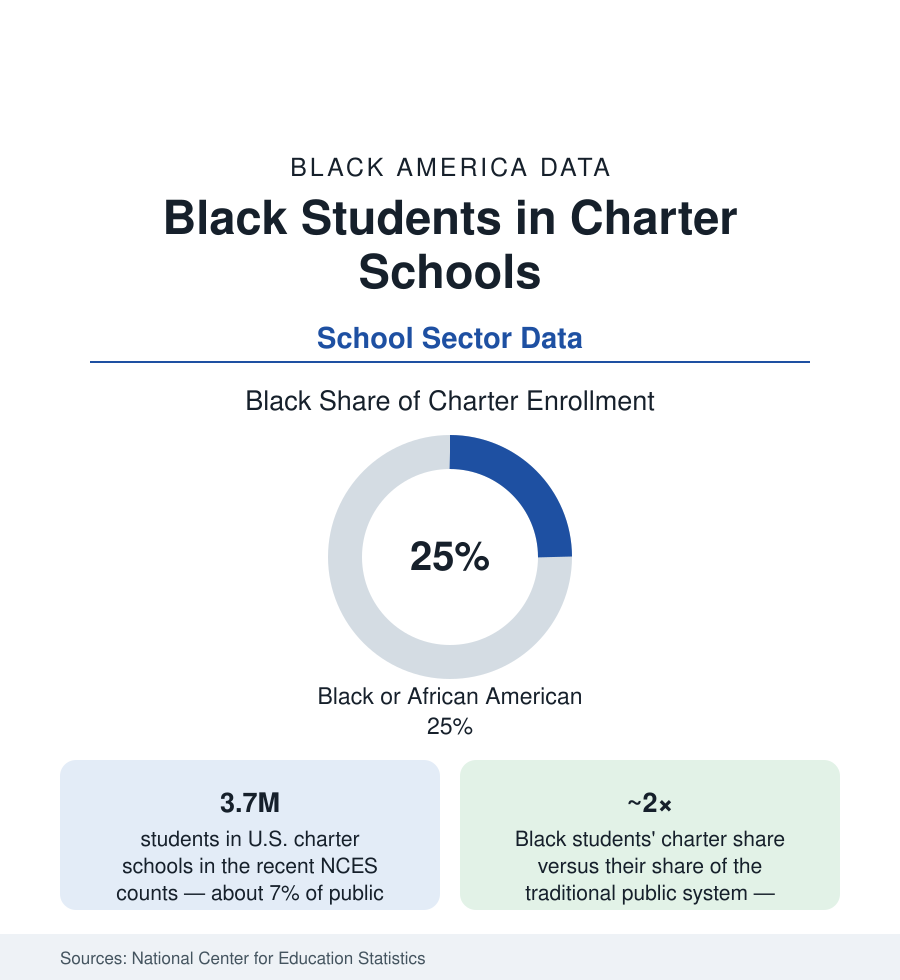

Black Education
Black Students in Charter Schools: A Parallel System's Enrollment Map
Black students are about a quarter of America's 3.7 million charter school students — twice their share of traditional public enrollment. The NCES data on the sector Black families chose.

Three decades into the charter experiment, its enrollment data carry a fact both sides of the debate build on: Black students attend charter schools at roughly twice their rate in the traditional public system — about a quarter of the nation's 3.7 million charter students are Black, against about 15% of traditional public enrollment. Whatever charters are, in the revealed preference of Black families with a choice, they are disproportionately the choice made. This article reports the sector's data: where the schools are, who runs them, what the outcome studies find, and what the closures do to the count.
The Map: Urban, Concentrated, and Networked
Charter enrollment is an urban phenomenon in the NCES geography: the sector's schools cluster in the big-city districts (several majority-Black cities — New Orleans' all-charter system the extreme case, Detroit, Washington, Flint, and Kansas City with charter majorities or near-majorities of public students), with suburban and rural charters a smaller, demographically different tier. The operator data divide the sector between the charter management organizations (the networks — KIPP, Success Academy, Uncommon, Noble, and their peers — running the branded multi-school systems whose enrollments run heavily Black and Latino in the cities) and the independent single-site schools (a long tail that includes the Afrocentric, arts, STEM-magnet-style, and virtual charters of the local file). The Black-led share of the sector's leadership is its own tracked statistic: the National Charter Collaborative's counts put Black leaders at the head of a substantial minority of charter schools — a leadership share well above the traditional system's principal data in the cities — with the Black-founded networks and independents a distinct segment the sector's own institutions organize around.
Why Families Choose: The Demand-Side Data
The survey and lottery data describe the demand: charter lotteries in the studied cities draw applicant pools more Black, more low-income, and more urban than the sector's critics' portrait — parents citing safety, academic focus, discipline culture, and college signage in the parent-survey literature, with the oversubscription ratios (the big networks' lotteries drawing multiples of their seats) as the demand curve's hard measure. The access data complicate the choice in the other direction: transportation (many charters provide none — a filter on the poorest applicants the enrollment data can show), the special-education and English-learner enrollment gaps (charters serve lower shares of both in the CRDC comparisons, with wide variance by operator), and the information file — the marketing, word-of-mouth, and church-and-barbershop networks through which charter knowledge travels, whose unevenness the equity audits record. The net enrollment fact stands over the complications: where a seat is offered and a bus can be found, Black families have taken the seat at twice the system's rate.
Outcomes: What the Studies Can and Cannot Say
The outcome literature's honest summary is variance: the CREDO national studies (the field's recurring benchmark) find the average charter effect near zero in early waves and modestly positive in the most recent — with Black students in urban charters among the subgroups posting the clearest gains in the matched comparisons (the 'days of learning' conversions showing urban Black charter students ahead of district peers by weeks per year in reading and math in the favorable cuts) — while specific networks post large effects and specific schools post negative ones, and the sector's closure data remove the worst tail over time. The non-test outcomes cut both ways in the record: the high-suspension discipline models of the 'no-excuses' era (their CRDC rates the equity file's exhibit) against the college-enrollment tracking the big networks publish (their alumni college-persistence data a genuine sector innovation in measurement, whatever its applicant-pool caveats). The graduation and attainment endpoints remain the literature's thinnest layer — the sector is young, its longitudinal data younger — and this article records the outcome question as genuinely open at the level of the average, closed at the level of the distribution: the variance is the finding.
Closures, Authorizers, and the Stability File
The sector's churn is the final dataset: charter closures run at a steady annual rate in the authorizer data (financial failure and academic non-renewal the leading causes), each closure displacing a student body that is — by the enrollment map — disproportionately Black, mid-childhood, and returned to the district schools the family had left. The stability literature counts the cost in achievement dips and mobility effects; the policy file responds with the authorizer-quality movement, the closure-notification and records-transfer rules, and the facilities question (charters' exclusion from district buildings and bond finance in most states — the per-pupil facilities gap the sector's finance studies quantify). The current counts show the sector's growth slowing from its 2010s pace and its center of gravity shifting toward the established networks and the suburban/virtual tiers — a maturation the next decade's enrollment map will confirm or revise.
Reading the Charter Data
A quarter of the sector, twice the rate, in the cities where the district file is hardest: charter schooling is, in the enrollment data, substantially a Black urban institution — chosen under constraint, argued over by people who mostly did not have to choose. The data discipline this article keeps is to report the choice, the outcomes' variance, and the churn together: the families' verdict, the researchers' distribution, and the system's unfinished work, in one ledger.
More in Black Education
Black Educational Attainment: High School Parity, the College Gap
About 89 percent of Black adults hold a high school diploma and one in four holds a bachelor's degree or higher — the attainment ladder, the college completion gap, and the generational trend.
Historically Black Colleges and Universities: Enrollment and Degrees
More than 100 HBCUs enroll roughly 290,000 students and award about one in six Black bachelor's degrees — an outsized share from a small sector. The federal education data.
Black College Enrollment: 2.4 Million Students
About 2.4 million Black students are enrolled in American colleges — nearly two-thirds of them women. The NCES enrollment data by sector, level, and trend.
Source: National Center for Education Statistics; U.S. Department of Education Civil Rights Data Collection; National Alliance for Public Charter Schools; state charter authorizer reports.